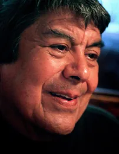
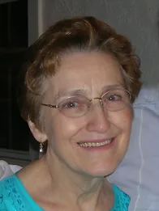
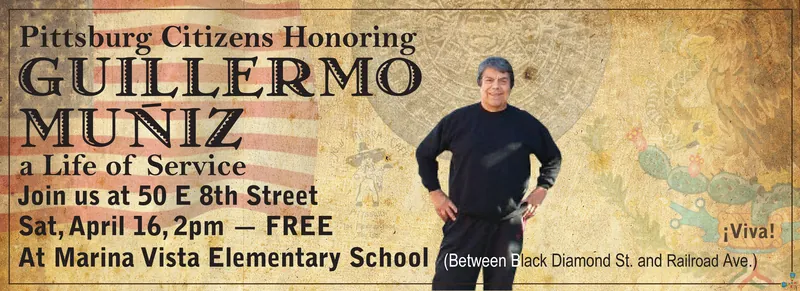

History of New Mecca Cafe, Pittsburg, California


Once upon a time a world class cyclist had to choose between competing in the Tour de France, and coming to America. The Tour's loss was our gain: Guillermo Muñiz left Guadalajara to pursue the American dream in the 1950s and eventually arrived in Pittsburg, California.
While working two full-time jobs — at the local cannery and as a dishwasher — Guillermo met his wife, Teresa Guzman, when both were working at the original Mecca. They went on to purchase the Mecca and later move to its present location. The restaurant became a regular clubhouse caterer for the Oakland Athletics and the San Francisco Giants, and even provided food for players and staff at the MLB All-Star Games when they were in The City ('84) and in Oakland ('87)! Having also served food for the 49ers and Golden State Warriors, the Mecca is better known locally not only for having catered countless weddings, birthday parties, and other special events, but also for its ongoing support of the community, including sponsoring youth sports, school events, scholarships, and community fundraisers. Renovated and expanded in 2011, with its beautiful copper ceiling, the New Mecca Cafe has only increased its local charm. It remains a mecca, a destination for South-of-the-border home cooking here in our own Pittsburg.
Había una vez un ciclista de clase mundial que tuvo que elegir entre competir en el Tour de France, y venir a América. La pérdida del Tour fue nuestra ganancia: Guillermo Muñiz dejó Guadalajara para perseguir el sueño americano en los años 50 y finalmente llegó a Pittsburg, California.
Mientras trabajaba en dos empleos de tiempo completo — en la enlatadora local y como lavaplatos — Guillermo conoció a su esposa, Teresa Guzmán, cuando ambos trabajaban en la Mecca original. Continuaron comprando la Mecca y luego se mudaron a su ubicación actual. El restaurante se convirtió en un proveedor regular del club de los Oakland Athletics y los San Francisco Giants, ¡e incluso proporcionó comida para jugadores y personal en los Juegos de Estrellas de la MLB cuando estaban en San Francisco ('84) y en Oakland ('87)! Habiendo servido también comida para los 49ers y Golden State Warriors, la Mecca es mejor conocido localmente no solo por haber atendido innumerables bodas, fiestas de cumpleaños y otros eventos especiales, sino también por su apoyo continuo a la comunidad, incluyendo el patrocinio de deportes juveniles, eventos escolares, becas y recaudaciones de fondos comunitarias. Renovado y ampliado en 2011, con su hermoso techo de cobre, New Mecca Cafe solo ha aumentado su encanto local. Sigue siendo un meca, un destino para la cocina casera del sur de la frontera aquí en nuestro propio Pittsburg.
Saturday, April 16, 2011, Guillermo was honored by the citizens and community of Pittsburg for his life of service.

Sábado, 16 de abril de 2011, Guillermo fue honrado por los ciudadanos y la comunidad de Pittsburg por su vida de servicio.